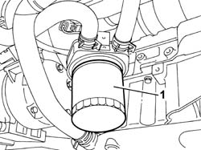
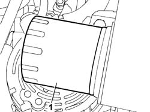

1084B30 ENGINE OIL FILTER R R
- Path
- Procedures > 10 ENGINE > 1084 ENGINE LUBRICATION > 1084B ENGINE OIL LUBRICATION CIRCUIT > 1084B30 ENGINE OIL FILTER R R
- Kind
- repair procedure (removal / refitting; the operation number is the code)
- Applies to
- engines: 2.0 16v, 2.0 16V JTD, 2.2 16V JTD; all production periods
- Interactive page
- https://sloeber94.github.io/elrnDB-fUlss/en/#/179007160
Applies to: engines: 2.0 16v; all production periods
 Removing
Removing
 Refitting
RefittingOp. 7055B54 UNDER-ENGINE GUARD - R R
- Position a suitable container for collecting the engine oil.
1. Undo the cartridge engine oil filter and remove it.

Applies to: engines: 2.0 16v; all production periods
Refitting
Removing- Fit the cartridge engine oil cartridge filter and tighten it.
Applies to: engines: 2.0 16V JTD; all production periods
Removing
Refitting- Position the vehicle on the lift.
Op. 7055B54 UNDER-ENGINE GUARD - R R
- Position a suitable container under the oil filter to collect the engine oil.
1. Remove the engine oil cartridge filter.

Applies to: engines: 2.0 16V JTD; all production periods
Refitting
Removing- Tighten the oil filter by hand and lubricate the filter seal with engine oil.
- Check the quantity of oil in the engine.
Applies to: engines: 2.2 16V JTD; all production periods
Removing
Refitting- Position the vehicle on the lift.
Op. 7055B54 UNDER-ENGINE GUARD - R R
- Position a suitable container under the oil filter to collect the engine oil.
1. Remove the engine oil cartridge filter. Remove the engine oil cartridge filter. Remove the engine oil cartridge filter.
Applies to: engines: 2.2 16V JTD; all production periods
Refitting
Removing- Tighten the oil filter by hand and lubricate the filter seal with engine oil.
- Check the quantity of oil in the engine.